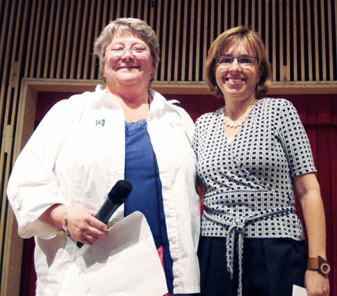
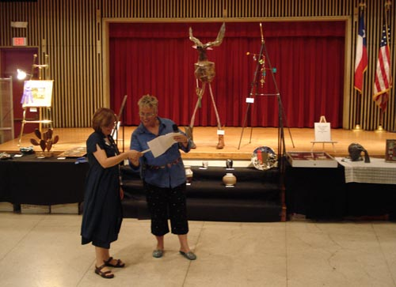

About the Artist | Purchases and Upcoming Shows | News | Contact
Martha Breternitz has won Third Place in the Jewelry category of the
62nd Annual River Art Group Show with her
"Tropicalia" necklace made of yellow-dyed Tagua seed.
Congrats, Martha!
 |
 |  |
This is an unprecedented win, the first time in the history of the competition
that a piece submitted in the Three-Dimensional Art Category has won Best of Show!
L: The winning piece, a three-stranded asymmetrical necklace made of silver and crystal.
M:
Martha accepts the prize from new River Arts Group President Linda Lahr
R:
Details of the winning piece, Click on the image to see it larger!
 |
 |  |
L: Lapis Dragonfly Necklace- 3rd Place, an asymmetrical necklace
made of lapis lazuli, silver, and crystal.
M: River Arts Group President Janet Paduh giving Martha her prize.
R: The winning piece, featured with its matching bracelet and earrings.
We are so proud of her achievements!